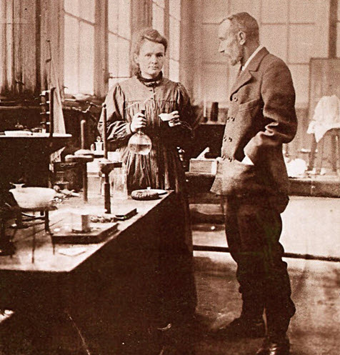

When Maria finished on top of her class in 1893, aged 26 in her Physics Masters course, she received funding to discover the relationship between steel and its magnetic properties to find a way to make more powerful magnets. Hungry for knowledge, Maria also completed a Chemistry Masters a year later.
Because Maria was a woman, she could not find a job at the university. As such, she returned to Paris and started on her Physics doctorate degree. While in Paris in 1895, Maria married Pierre Curie. After this, she was known as Marie Curie. He was eight years her elder and was already a prestigious industrial scientist and inventor, with a Physics doctorate to boot. Together, the two of them developed a dynamic, romantic relationship as they researched the properties of uranium for Marie Curie's doctorate degree.In this field, Marie discovered that uranium rays charged the air they passed through, so the air became capable of conducting electricity. Also, she found that amount of rays emanating from uranium depended on the amount of uranium, not its chemical form. From this, she realized that the uranium rays were from atoms and not due to a chemical reaction. Third, she found that the uranium-type pitchblende and torbernite made air more conductive than uranium, leading her to hypothesize that they had a more radioactive chemical element than uranium.
Retrieved from: http://commons.wikimedia.org/wiki/File:Marie_et_Pierre_Curie.jpg
Urged by a burning interest to discover this new radioactive element, Marie and Pierre worked hard to process tons and tons of pitchblende. Even though they lacked professional tools to do the job, they persevered with the grimness of a bulldog that does not yield. That same year, in 1898, they discovered the element - in fact, two elements - that they had been looking for. The first was polonium, as Marie Curie named it, in remembrance of her homeland Poland. This element was hundreds of times more radioactive that uranium and similar to bismuth. The second element was radium, which was millions of times more radioactive that uranium. Gleefully, they also discovered that radium continuously emitted heat without any chemical reaction. With these discoveries topping her career, Marie earned her PhD degree in June 1903.Very soon after, she was also the first women to be given the Nobel Prize for Physics, the glory of which she shared with Pierre and Henri Becquerel, who first discovered radioactivity. She and her husband discovered with amazement that the radioactivity emanating from radioactive elements could also be used to treat cancers and study the human body using X-rays - and so, during 1914 - 1918, during World War I, Marie Curie used this new medicine to treat wounded soldiers from the battlefield. In 1911, after she isolated a pure radium sample, she was also given the Nobel Prize for Chemistry. Not only was she the first woman to earn the Nobel Prize, she was also the first person to win the prize in both Physics and Chemistry.